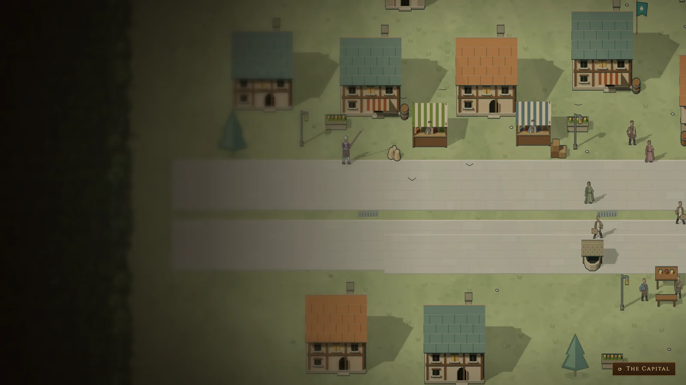

王城：两版效果图
都是真实引擎渲染的画面（mac1，Chromium，1600×900，同一帧时间）。点按钮切换版本和视角。

现在
- 房子是平涂剪贴画，墨色粗线，和游戏建筑像两个游戏
- 灰砖路面一块块都画了，是全图最抢眼的东西
- 每个道具自带朝下的阴影椭圆，和 3D 太阳的阴影方向不一致
A 版：3D 同语言（推荐）
- 民房、酒馆、摊位、路灯、桌凳、桶箱都按游戏建筑的方法建模：同样的三档光、同样的墨线
- 阴影和遮挡由引擎统一处理，和人物、游戏建筑是一套
- 屋顶撑起轮廓，木构、窗、门、招牌是细节的重点（英雄无敌 3 的原则）
- 以后加房子就是加几何体；新增约 236 KB 的模型，只有首页王城会加载
B 版：2D 精修
- 还是原来的 2D 素材，按作画规范改：细线、木构用木色、材质色、去掉自带阴影
- 比现在干净，但房子的透视还是素材自己画的，和游戏镜头不一致
- 渲染契约的引擎阴影接上以前，这一版的道具没有影子，看起来有点飘
两版都没动的：树、推车、旗是游戏里共用的素材，防御塔、兵营是游戏建筑，所以都不在王城里单独改。市政厅用的是首页专用的模型。 代码分支：A 版是 art/capital-mockups，B 版是 art/capital-mockup-b。 规范见 ../prop-painting.zh.md 和 ../capital-reference.zh.md。